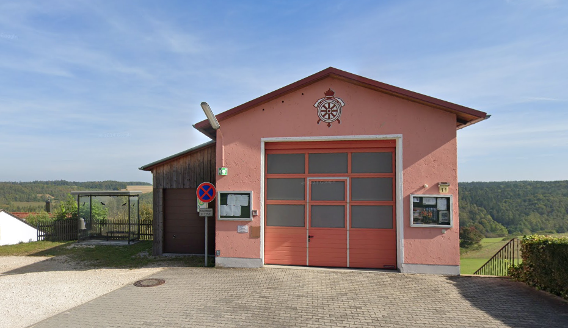
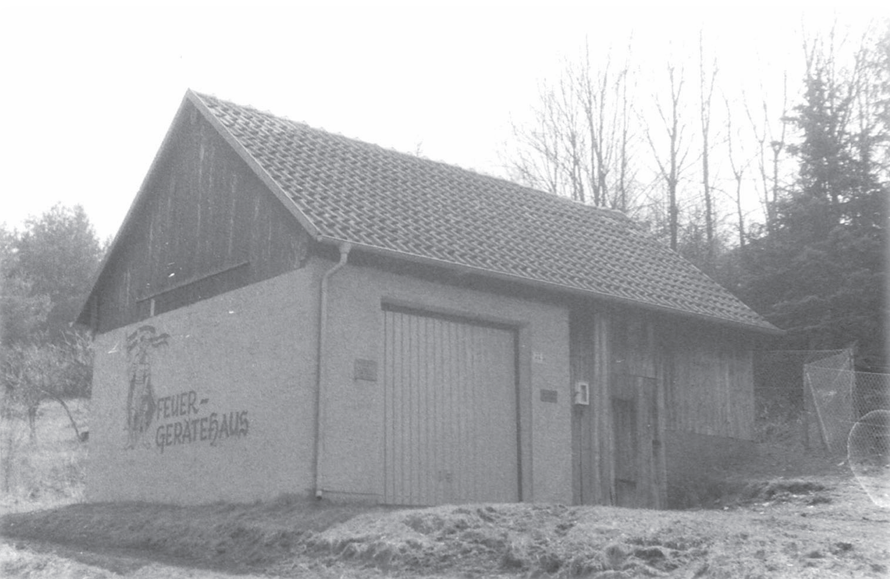
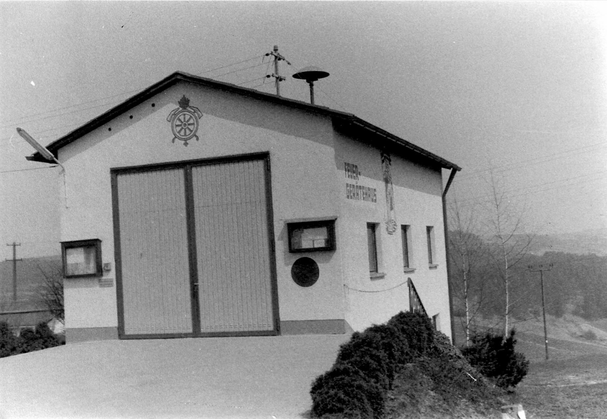

Gerätehaus

| Adresse: | Auf der Höhe 11 | |
| 93182 Duggendorf - Judenberg |
Geschichte
| 1966 |

|
Bau eines Gerätehauses in Heitzenhofen unter Kommandant Josef Hierl und Vorsitzenden Karl Kiener sen. Im Oktober desselben Jahres wurde auch eine TS 8/8 mit Anhänger in Dienst genommen. |
| 1975/76 |

|
Bau des neuen Feuerwehrhauses in Judenberg unter Aufwendung von 1845 Arbeitsstunden. Dieses Gerätehaus wurden nach damaligen Normen und Standards unter Kommandant Josef Hierl und Vorsitzenden Albert Mühl erbaut. |
| 2000 |
|
Umbau des Gerätehauses Judenberg mit Ausbau des Kellers. Einbau der heutigen Toiletten und Einrichten der Feuerwehrstube mit Küche. |
| 2016 |
|
Errichtung deines Anbaus als Lager für Vereinsinventar unter Kommandant Peter Pilz und Vorsitzendem Josef Graf. |